← Índice de los 69 tutes de IDA
Tute 32 · WinDbg + IDA
se conecta con: Vulnerabilidades (defensivo)
INTRODUCCIÓN AL REVERSING CON IDA PRO DESDE CERO PARTE 32.
WINDBG MAS IDA.
Preparando Windbg para trabajar con IDA.
Una de las cosas que nos faltan instalar es Windbg, que puede ser manejado desde la interfase de IDA y que es un gran debugger, quizás le falta comodidad ya que es casi todo comandos tipo consola y se complica un poco de manejar, pero podemos utilizar la gran interfase que tiene IDA, con Windbg debuggeando detrás, muy útil cuando se desea debuggear kernel, o tener una buena información del estado del heap en bugs tipo heap overflow o use after free que veremos más adelante.
Hay muchas formas de instalar el WINDBG, lamentablemente varían y tendrán que probar la que a ustedes les va, como yo estoy en Windows 10 fui a la pagina de Microsoft para bajar el Windows 10 SDK.
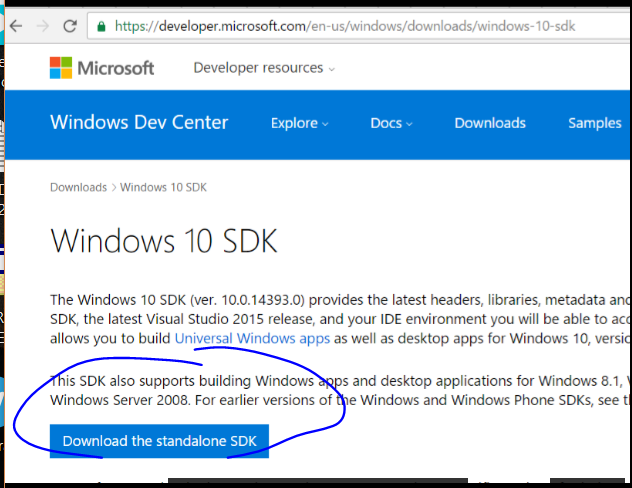
Allí me baje el instalador y cuando me da las opciones solo elegí que instale las DEBUGGING TOOLS FOR WINDOWS.
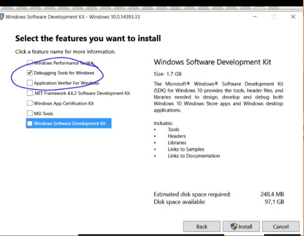
Desmarcando las otras opciones instalará el Windbg, como cada Windows tiene su SDK, podrán hacer lo mismo en otros Windows, y instalar el que corresponde a su sistema, al menos en este caso sabemos que va bien.
Luego debo ir a la carpeta cfg dentro de la instalación del IDA y buscar IDA.CFG.
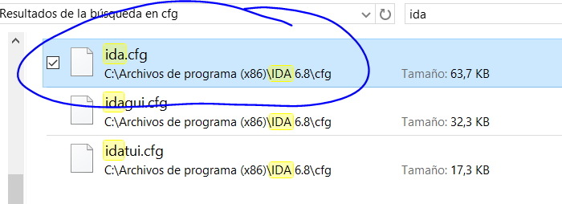
Edito ese archivo y le tengo que poner el path en DBGTOOLS a donde está instalado el windbg x86, en mi caso se encuentra en.
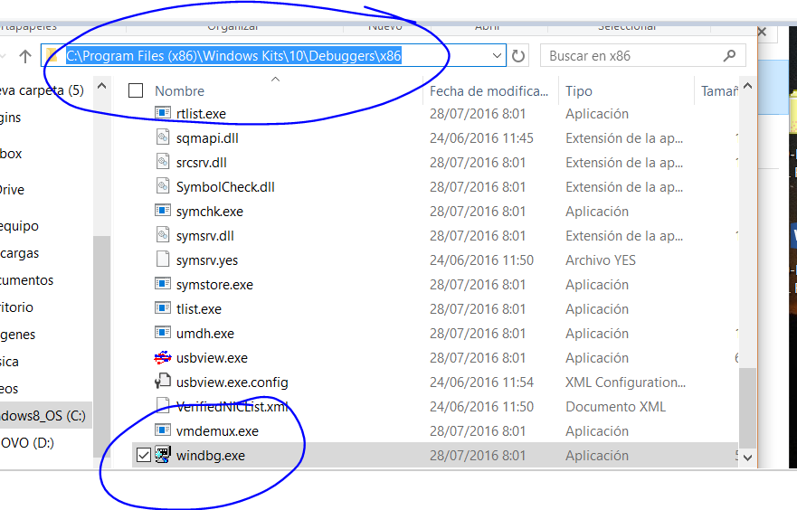
Así que en el archivo IDA.CFG busco DBGTOOLS.
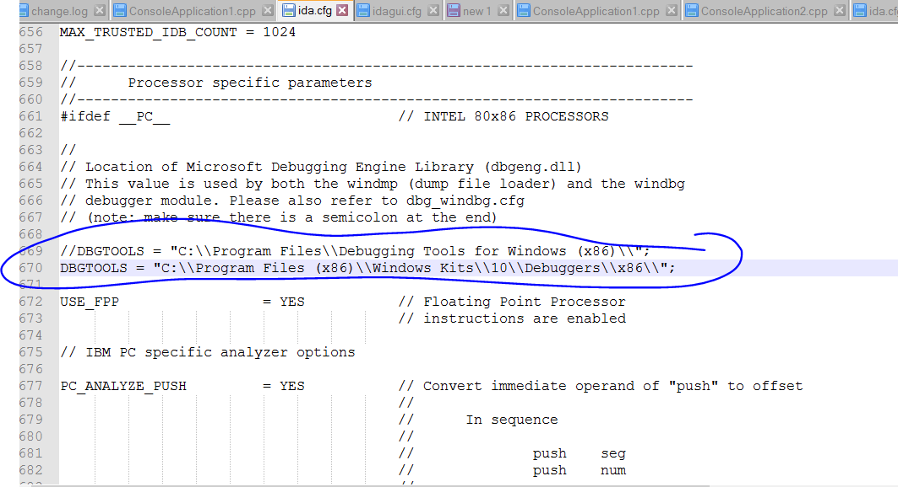
Y le agrego el path exacto, agregando la doble barra \\ en vez de la barra simple para separar las carpetas, deje comentado el path original que traía justo arriba.
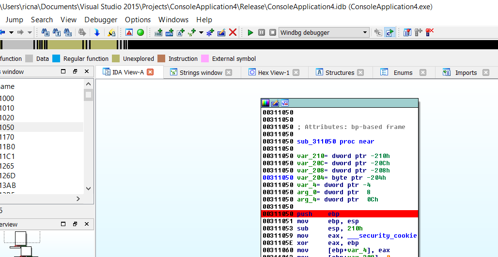
Abro cualquier ejecutable, y le pongo un BREAKPOINT para que pare y cambio el debugger a Windbg.
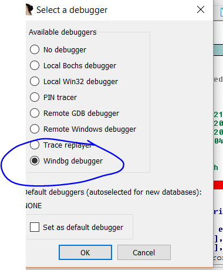
Luego veremos si quedo bien, arrancamos el ejecutable, si nos dice que no encuentra el WINDBG deberán revisar el path, o algo fallo en la instalación, lo cual puede pasar, creo que la única forma de ver el problema es mirar con Process Monitor que archivos busca al arrancar y donde, para ver lo que falla.
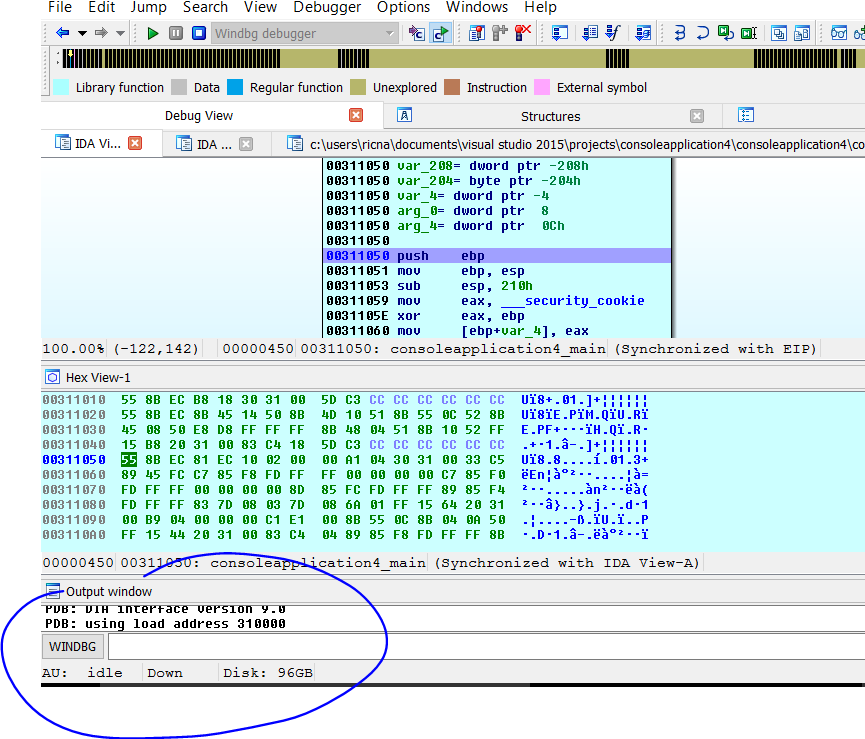
Allí paró tal cual fuera el Win32 local debugger de IDA, pero vemos que abajo donde esta normalmente la barra de Python nos aparece WINDBG (sino aparece investiguen y manden como lo solucionaron para agregarlo aquí en el tutorial), ademas clickeando en la palabra WINDBG puedo cambiar a la barra de Python si necesito.
COMANDOS DE WINDBG.
Esto quiere decir que la cosa va bien, que quedo bien instalado, podemos utilizar la GUI de IDA y a la vez comandos de windbg, probemos algunos.
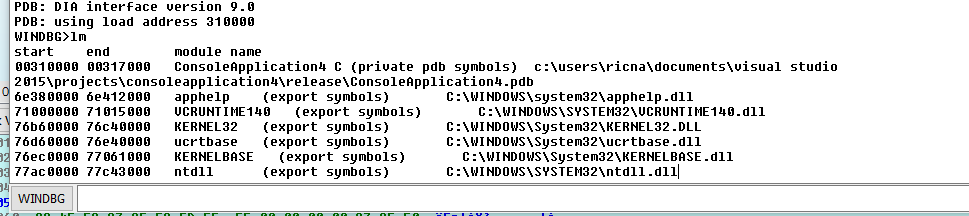
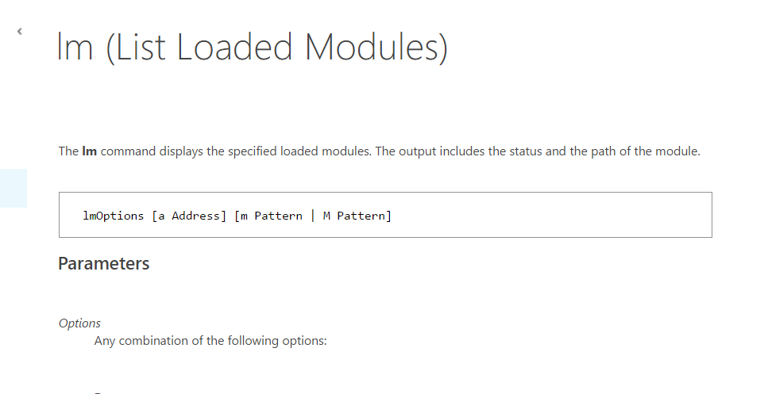
Funciono puedo ver la lista de módulos en la barra de Windbg, obviamente también en la de IDA.
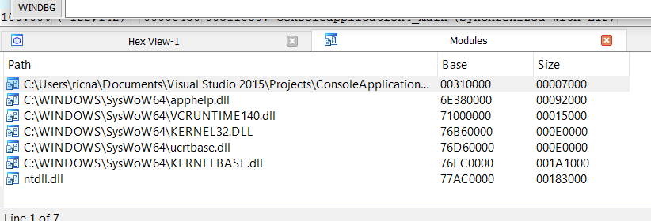
También debemos configurar los símbolos para el WINDBG, vemos que si hacemos
.reload
Me da error con los mismos al no estar configurado donde guardarlos.
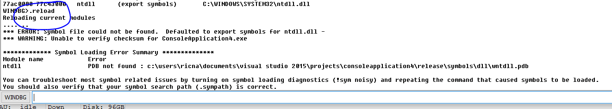
CONFIGURANDO LOS SIMBOLOS PARA WINDBG.
Creemos una carpeta en C para los símbolos, obviamente IDA tiene que arrancar como administrador sino no podrá escribir allí.
En las ENVIRONMENT VARIABLES o VARIABLES DE ENTORNO de Windows agregaremos _NT_SYMBOL_PATH.
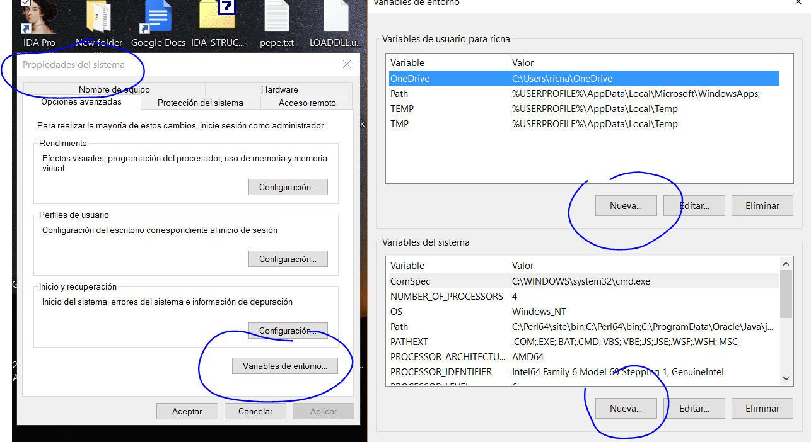
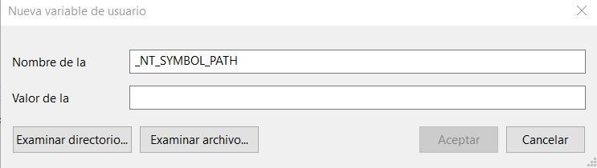
Y como valores ponemos por ejemplo.
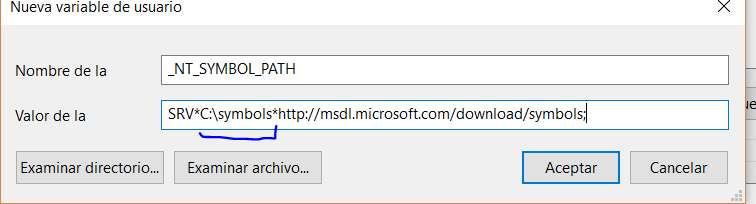
Allí pondre el path a la carpeta que cree donde se bajara los símbolos, en mi caso sera la carpeta symbols en C.
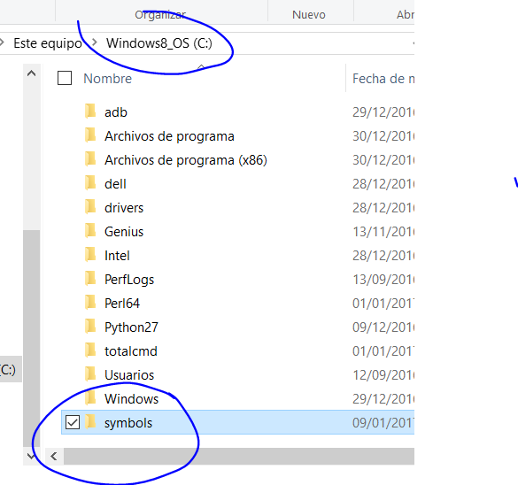
Reinicio la maquina o al menos el explorador de Windows (el proceso explorer.exe matándolo y arrancándolo desde la barra de procesos)
Y ahora cuando arranco de nuevo el IDA y arranco a debuggear con el windbg, ya vemos que se empieza a tratar de bajar los símbolos muestra ventanas de downloading y al finalizar con lm, vemos que aparece el path que pusimos y dentro de la carpeta de los símbolos están los pdb.
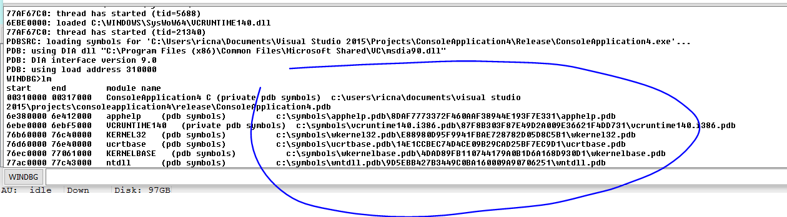
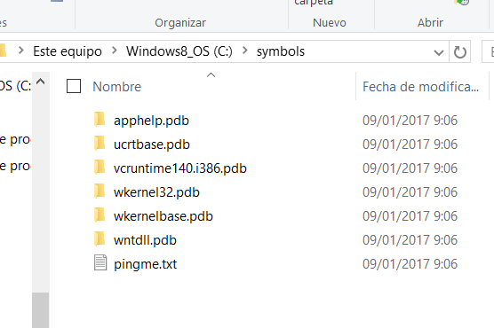
Ya lo tenemos configurado para trabajar.
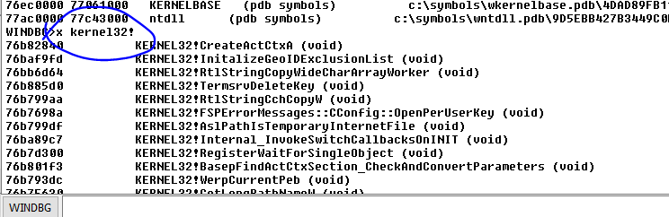
Con x podemos ver la lista de funciones de kernel32 por ejemplo si queremos podemos usar comodines.
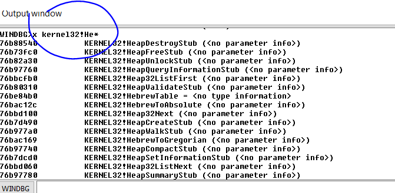
Las que empiezan por He.
Por supuesto también en IDA, en la lista de módulos puedo hacer click derecho LOAD SYMBOLS de algún modulo.
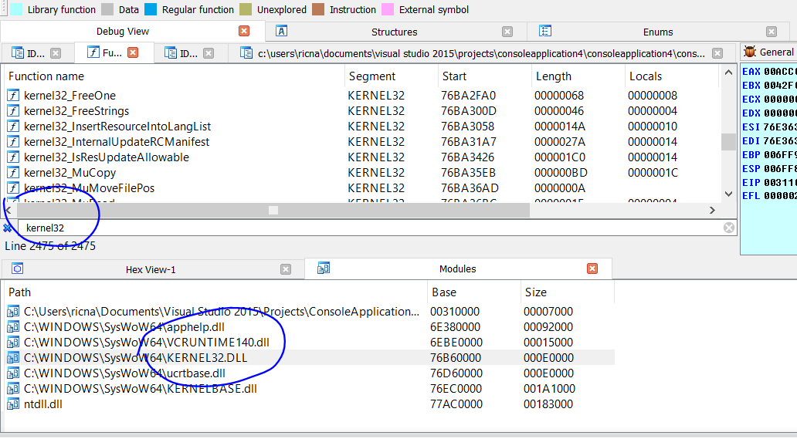
Y también los tendré en la interfase del IDA.
Tengo la posibilidad de poner breakpoints desde la interfase de IDA como lo hacemos normalmente con F2 y desde la barra de windbg los que lo manejara el mismo.
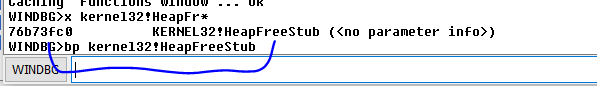
Si hago BL para listar los breakpoints del windbg.
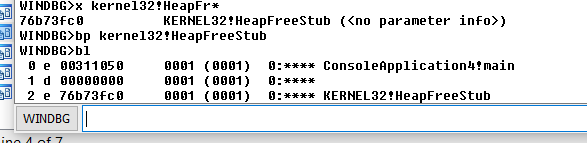
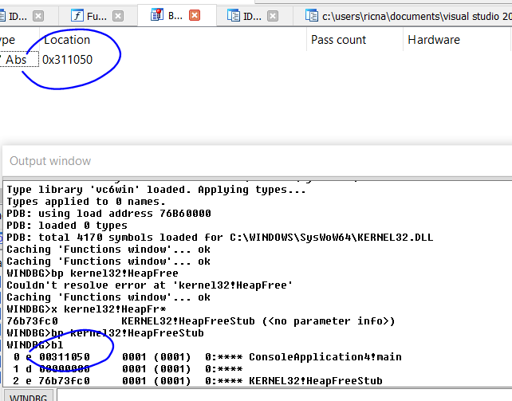
Vemos que en windbg se listan todos los breakpoints, mientras que en el listado de IDA solo aparecerán los de IDA aunque siempre parara en todos.
Bueno por ahora lo dejaremos aquí es importante que vayan preparando la instalación para que funcione bien a veces hay problemas con eso, así que en la siguiente parte seguiremos adelante.
Hasta la parte 33.
Ricardo Narvaja